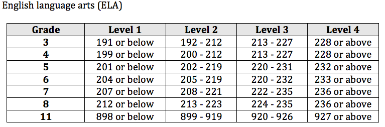

6 Standards and Reporting
6.1 6.1 State Adoption of Alternate Academic Achievement Standards for SWSCD
The Oregon Extended assessment (ORExt), Oregon’s Alternate Assessment based on Alternate Academic Achievement Standards (AA-AAAS), is part of the Oregon Statewide Assessment System. The ORExt is administered to Oregon students with the most significant cognitive disabilities (SWSCD) in English language arts and mathematics in Grades 3-8 and 11. The ORExt is administered in science in Grades 5, 8, & 11. The ORExt links to the CCSS in English language arts and mathematics. The new ORExt is dually linked to Oregon’s former science standards, as well as to the NGSS. Results from the English language arts and math administrations are included in calculations of participation and performance for Annual Measurable Objectives (AMO) - a provision of the No Child Left Behind Act (NCLB). Science participation is also included as part of the Title 1 Assessment System requirements, and is administered in grades 5, 8, & 11. The revised ORExt is built upon a vertical scale in order to support reliable determinations of annual academic growth in ELA and mathematics in Grades 3-8. The complete vertical scaling plan and operational item selection decision rules are located in Appendix 2.2.1.
6.1.1 6.1A State Formally Adopted Alternate Academic Achievement Standards
The State Board of Education formally adopted the AAAS and achievement level descriptors (ALDs) on June 25, 2015 (see Appendix 6.1A.1). The ELA, Math, and Science AAAS, including both the ALDs and the requisite cut scores are included in Appendix 6.1.A.2.
6.1.2 6.1B State Applies AAAS to All Public School SWSCD in Tested Grades
The state applies the AAAS to all public school-served SWSCD who participate in the ORExt in Grades 3-8 & 11 in English language arts and mathematics, and in Grades 5, 8, & 11 in science.
6.1.3 6.1C State’s AAAS Include At Least Three Levels, ALDs, and Cut Scores
The alternate academic achievement standards in Oregon are composed of four levels (though only three are required). In descending order, they are (a) Level 1, (b) Level 2, (c) Level 3, and (d) Level 4. Level 1 and Level 2 performances represent proficient achievement, while the bottom two levels represent achievement that is not yet proficient. The procedures followed to develop Oregon’s alternate academic achievement standards were consistent with Title 1 assessment system requirements, including the establishment of cut scores, where relevant. In order to define four levels of proficiency, Oregon set three cut scores across all subject areas: (a) to separate Level 1 from Level 2, (b) to separate Level 2 from Level 3, and, (c) to separate Level 3 from Level 4. The alternate academic achievement standards in English language arts, mathematics, and science for the ORExt, including the achievement level descriptors (ALDs) and cut scores, were established during standard setting meetings held on June 15 (science), 16 (mathematics), and 17 (English language arts).
6.2 6.2 Achievement Standard Setting
Standard Setting meetings were held at the University of Oregon in Eugene, OR on June 15, 2015 (Science), June 16, 2015 (Mathematics), and June 17, 2015 (English language arts). A total of 53 standard setters were involved in the process: 11 in Science, and 21 in both English language arts and Mathematics. Panelists were assembled in grade level teams of three, where two members were special educators and one member was a content specialist.
The panelists were highly educated. Over 90% of the panel possessed a Master’s degree or higher. Fifty-seven (57%) percent of the panelists had over 11 years of teaching experience. Seventy-six percent (76%) of the panelists had some experience working with students with significant cognitive disabilities with 64% licensed as Special Educators. The majority of panel members were female (87%), from the Northwest of the state (87%), and White (83%). No panel member self-identified with Oregon’s major minority population (Hispanic).
In addition to the live training during standard setting meetings, panelists were asked to complete several training requirements prior to the standard setting meetings, which oriented them to the student population of students with significant cognitive disabilities (SWSCDs), the Oregon Extended Assessment test design and history, as well as the bookmarking standard setting method. Panelists were quite confident in their preparation and final judgments, as evidenced by responses to the questions: (a) ” The training helped me understand the bookmark method and how to perform my role as a standard setter.” (b) “I am confident about the defensibility and appropriateness of the final recommended cut scores.” and, (c) “Overall, I am confident that the standard setting procedures allowed me to use my experience and expertise to recommend cut scores for the ORExt.” The hearty majority of standard setters strongly agreed with these statements, while all participants agreed.
The nine-step process implemented for these standard setting meetings was based on Hambleton & Pitoniak (2006) as reported by R.L. Brennan (Educational Measurement, 4th Edition, pp. 433-470). Standard setting evaluation questions posed to participants were adapted from Cizek’s Setting Performance Standards (2012). Standard setters set cut scores and recommended Achievement Level Descriptors (ALDs) for the Oregon State Board of Education to consider. The cut scores were articulated to reflect vertical development, or at least maintenance, of expectations across grades in a manner that respected standard setter judgments to the greatest possible degree. Six changes were made in ELA and Mathematics. Science is not built upon a vertical scale, so no cut score adjustments were necessary in Science. The cut scores are listed below.
 

Note: The ELA and Math vertical scales for the ORExt are centered on 200 in grades 3-8 and can be used to document year-to-year growth. None of the other scales should be used for longitudinal comparisons. All Grade 11 scales are independent and centered on 900. The grade 5 Science scale is independent and centered on 500, while the Grade 8 Science scale is independent and centered on 800. An independent auditor evaluated the bookmarking standard setting process. The auditor’s comprehensive report can be found in Appendix 6.2.2.
6.3 6.3 Challenging and Aligned Academic Achievement Standards
Oregon educators initially evaluated new Oregon Essentialized Assessment Frameworks in two respects. First, educators were asked to determine the appropriateness of the standards selected for inclusion and exclusion in the Essentialized Standards (yes/no). Second, the level of linkage between the Essentialized Standards and grade level content standard was evaluated (0 = no link, 1 = sufficient link, 2 = strong link). Summary results are provided in the tables below. A comprehensive essentialized standard to grade level standard linkage study, as well as essentialized standard to item alignment study, is provided in Appendix 3.1A.

6.4 6.4 Reporting
Oregon’s reporting system facilitates appropriate, credible, and defensible interpretation and use of its assessment data. With regard to the ORExt, the purpose is to provide the state technically adequate student performance data to ascertain proficiency on grade level state content standards for students with significant cognitive disabilities (see Sections 3 and 4). In addition, the state makes it clear that results from the Oregon Extended are not comparable to results from the SBA/OAKS (see Appendix 2.3, p. 29-31). Nevertheless, the test meets rigorous reliability expectations (see Section 4.1). Validity is considered here as an overarching summation of the Oregon Extended assessment system, as well as the mechanisms that Oregon uses to continuously improve the ORExt assessment (see Appendix 2.3B.10).
6.4.1 6.4A Public Reporting
Oregon reports participation and assessment results for all students and for each of the required subgroups in its reports at the school, district, and state levels. The state does not report subgroup results when these results would reveal personally identifiable information about an individual student. The calculation rule followed is that the number of students in the subgroup must meet the minimum cell size requirement for each AMO decision: participation, achievement in English language arts and math, attendance, and graduation, where appropriate (see Appendix 2.6C).
6.4.2 6.4B State Reports Interpretable Results
Oregon develops and disseminates individual student data upon final determination of accuracy. The state provides districts with individual student reports (ISRs) that meet most relevant requirements. The state incorporated the Standard Error of Measure (SEM) for each student score into the report templates. The SEM associated with each cut score is provided in Section 4.1B. Also, see the mock-up ISR in Appendix 6.4C.
6.4.3 6.4C1 - C5 State Provides Individual Student Reports
Oregon’s student reports provide valid and reliable information regarding achievement on the assessments relative to the AAS. The reliability of the data is addressed in Section 4.1. Validity is considered here as an overarching summation of the Oregon Extended assessment system, as well as the mechanisms that Oregon uses to continuously improve the Oregon Extended assessment. The ISRs clearly demonstrate the students’ scale score relative the AAAS that is relevant for that content area and grade level (see Section 4.4 and Appendix 6.4C). The Oregon ISRs provide information for parents, teachers, and administrators to help them understand and address a student’s academic needs. These reports are displayed in a simple format that is easy for stakeholders to understand. District representatives can translate results for parents as necessary. Scaled score interpretation guidance is published in Appendix 2.1A.
7 Conclusions and Next Steps
In sum, the rigor of the procedural development and statistical outcomes of the ORExt were substantive and support the assessments intended purpose. Procedural evidence includes essentialized standards development, item development, item content and bias reviews, an independent alignment study and item selection based upon item characteristics. Outcome-related evidence included measure reliability analyses, point measure biserials, outfit mean squares, item difficulty and person ability distributions, and convergent and divergent validity evidence. These sources of evidence were all quite good and provide important validity evidence.
The test development process adhered to procedural guidelines defined by the AERA/APA/NCME Standards for Educational and Psychological Testing (2014), as well as incorporating procedures that are known in the field to be best practice. For example, an independent auditor evaluated alignment in 2016-17. Documentation collected in the alignment study report suggests that the ORExt assessment system is aligned based on five evaluation components: a) standard selection for essentialization, b) strength of linkage between essentialized standards and grade level content standards, c) alignment between items and essentialized standards, d) alignment between the essentialized standards and the achievement level descriptors, and e) alignment between the achievement level descriptors and the ORExt test items. In addition, the ORExt reflects what highly qualified Oregon educators believe represents the highest professional standards for the population of students with significant cognitive disabilities, as evidenced in our consequential validity study by teacher support of the academic content on the ORExt as well as the behaviors sampled during test administration.
The test reliabilities for the ORExt were quite high, suggesting that the assessment items functioned consistently with the test as a whole. The correlations between students’ content scores across subjects were not overly strong, implying that each test measures a distinct construct. The classification consistency analyses demonstrate that the ORExt is appropriately categorizing students into the proficient category, and capable of doing so in a consistent manner. The vertical scale developed in 2014-15 appears to be modeling incremental growth across Grades 3-8 in ELA and mathematics, as intended. The Grade 7 mathematics test demonstrated sufficient item difficulties across the ranges medium and high item complexity. However, low level items must again be amended in the 2018-19 school year. The ELA and science assessments could continue to benefit from the addition of more difficult items, as evidenced by comparisons of the average person abilities and item difficulties. Mathematics assessments appear to be functioning quite well in terms of person abilities and item difficulties.
The Oregon Observational Rating Assessment (ORora) results demonstrate that approximately 17-25% of the SWSCD who participated in the ORExt also took the ORora, depending upon grade level. A total of 529 students were administered the ORora in 2017-2018 school year. The participants were primarily students with multiple, severe disabilities with very limited communication systems. Analyses of missing data patterns for the ORExt demonstrated that QAs were generally able to adhere to the discontinuation rules. Quantitative results indicate that a total of 529 students across all tested grades were administered the ORora. Response patterns on the ORExt were compared to ORora results to determine what percentages of QAs were administering the ORora due to the minimum participation rule and what percentage were administering the ORora of their own volition. Analyses showed that 480 students were eligible to take the ORora in English language arts, 466 students were eligible to take the ORora in mathematics, and 86 were eligible to take the ORora in science. This means that about 30 students per grade, per content area received five or fewer correct responses within the first 15 items administered on the ORExt. Of the 600 test records that met ORora eligibility requirements, 71 were not administered the ORora. In addition, there were 62 students in ELA and Math, respectively, who were administered the ORora without having participated in the ORExt (54 of those students were the same students, across each content area, with eight students unique to each content area, respectively).
The 2017-18 Oregon Consequential Validity study provides important information for future administrations of the ORExt. Results indicate historical concerns that are not possible to address, such as the ongoing tension between assessing life skills and academics, but also to some actionable steps with a focus toward continuous improvement. Respondents pointed to positive attributes of the ORExt, especially those involving test administration and design and felt somewhat positive regarding various educational impacts of the ORExt.
During the 2017-18 ORExt testing window, feedback from the field and the number of students administered the tablet based ORExt indicated assessors preferred administration of the tablet/web-based assessment versus paper/pencil. Benefits expressed by the field indicated increased student engagement, improved standardization, ease of use by teachers, and resource protection (i.e., time, printing, expense). Practice tests were available to familiarize teachers and students to the tablet format prior to administration of the secure tests. Based on the 2017-18 testing window, enhancements are in process to improve the tablet/web-based administration for the 2018-19 testing window. These improvements include updates to make administration/data entry more efficient for assessors and additional alerts if devices are no longer online. The 2018-19 testing window was the first year all data entry was held on the BRT servers. ODE no longer provides a paper/pencil data entry platform.
Documenting evidence of validity remains an ongoing and continuous process. Our efforts to continue to improve the assessment system are outlined below, as well as in Sections 3 and 4 above. We also have studies planned over the course of the next three years that will help to solidify the evidence that is accumulating. All of the evidence we have at hand suggests that the ORExt is sufficient to its stated purpose of providing reliable determinations of student proficiency at the test level in order to support systems level analysis of district and state programs. The ORExt will hopefully continue to improve over time due to field-testing and constant monitoring and review, and additional validity evidence will be gathered.
As mentioned above in Section 3.1A, data are presented to support the claim that Oregon’s AA-AAAS provides the state technically adequate student performance data to ascertain proficiency on grade level state content standards for students with significant cognitive disabilities - which is its defined purpose. In this technical report, we have provided content validity evidence related to the ORExt test development process (i.e., essentialization process, linkage study, distributed item review, test blueprint, item writer training and demographics, and item reviewer training and demographics), ORExt test reliability evidence, and ORExt consequential validity evidence. Further analyses over the coming years are planned to continue the development of technical documentation for overall construct validity of the ORExt. The technical documentation plan for the 2017 through 2019 school years is provided below: